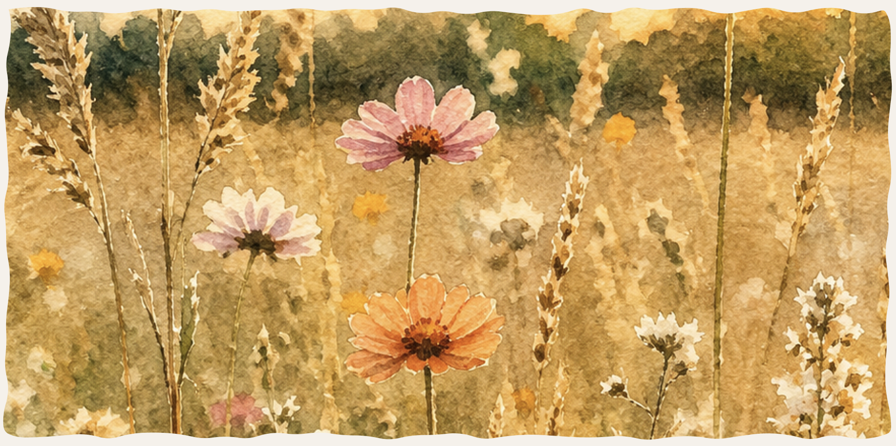
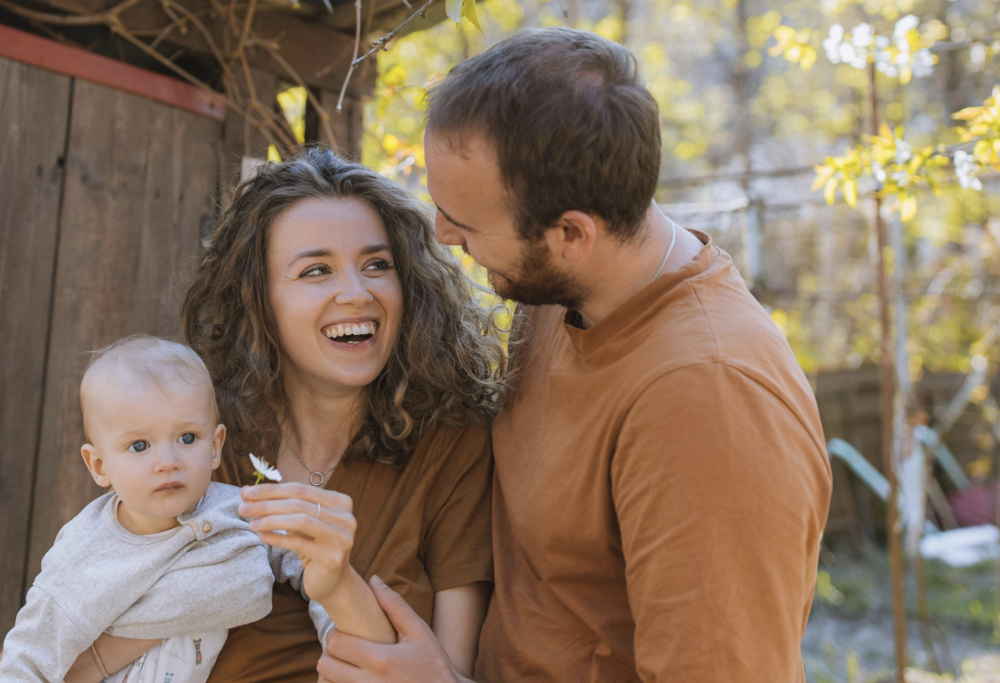
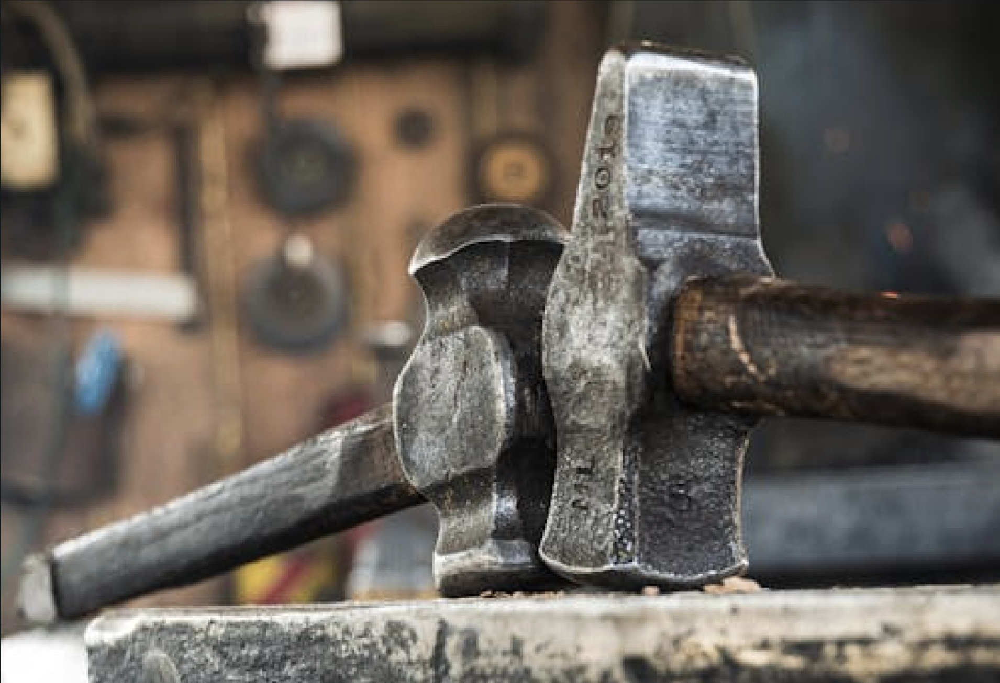
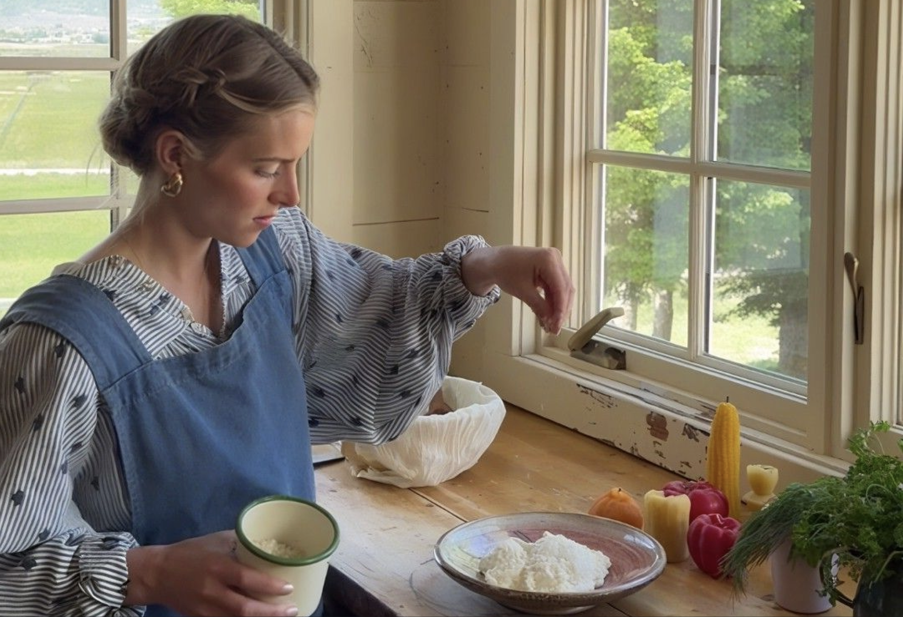

På Sejerø er der mulighed for at skabe et familieliv med mere ro, nærvær og fleksibilitet. Her vælger mange en
hverdag med færre
udgifter, mere tid sammen og plads til at leve godt – også på én indkomst. Øens stærke fællesskab og rolige
tempo giver gode rammer
for hjemmepasning, selvstændige projekter og iværksætteri, hvor arbejde og familieliv kan hænge bedre
sammen. Her er der plads til
at skabe et liv, der passer til jer.

På Sejerø vælger mange familier en enklere hverdag med mere tid og færre faste udgifter. De lave boligpriser gør det muligt at bo godt uden økonomiske bekymringer. Dette giver mere frihed til at prioritere familieliv, nærvær og fleksibilitet.

Sejerø giver plads til drømme, idéer og nye begyndelser. Her finder mange roen og friheden til at skabe deres egen virksomhed, arbejde kreativt eller kombinere arbejdsliv med et mere balanceret familieliv tæt på naturen.

På Sejerø er der tid og plads til at fordybe sig i det, man elsker. Uanset om det er kunst, håndværk, have, fotografering eller andre kreative interesser, giver øens rolige tempo mulighed for at gøre hobbyer til en større del af hverdagen – eller til en levevej.
På Sejerø vælger mange familier en enklere hverdag med mere tid og færre faste udgifter. De lave boligpriser gør det muligt at bo godt uden økonomiske bekymringer. Dette giver mere frihed til at prioritere familieliv, nærvær og fleksibilitet.
Sejerø giver plads til drømme, idéer og nye begyndelser. Her finder mange roen og friheden til at skabe deres egen virksomhed, arbejde kreativt eller kombinere arbejdsliv med et mere balanceret familieliv tæt på naturen.
På Sejerø er der tid og plads til at fordybe sig i det, man elsker. Uanset om det er kunst, håndværk, have, fotografering eller andre kreative interesser, giver øens rolige tempo mulighed for at gøre hobbyer til en større del af hverdagen – eller til en levevej.